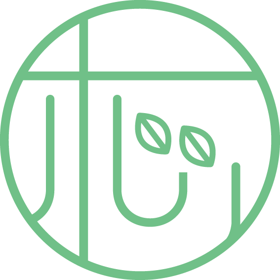

しがたかしホッとライン◉Menu
◉トピック
AIに相談したいのに「うまく聞けない」「言葉にならない」と感じているあなたへ。人との対話を通じて思考と感情を整理し、「本当は何を聞きたいのか」という問いを一緒に見つけていく、AI時代のための心理カウンセリングと、その背景にあるAI対話構造や天文・占星術の研究について紹介する記事です。
最近は、AIに相談することが当たり前の時代になりました。
ChatGPTなどを使って、仕事や人間関係、人生の悩みを整理する人も増えています。
けれど実際には、
「何を聞けばいいのか分からない」
「気持ちがまとまらなくて、うまく言葉にできない」
そんな状態で、AIの画面の前で止まってしまう方も少なくありません。
私は心理カウンセラーとして、
“AIに相談する前の段階”を整えるサポートをしています。
モヤモヤしている気持ちや、まだ言葉になっていない感情を、
人との対話を通して、少しずつ言葉にしていくお手伝いです。
AIはとても便利な道具ですが、問いが曖昧なままだと、答えもまた曖昧になります。
だからこそ、
・思考を整理する
・感情を言語化する
・自分の本当の問いを見つける
そんなプロセスを、人との対話で整える時間も大切だと考えています。
ここでは、「解決してもらう場所」というよりも、
安心して話せる場所
として、カウンセリングを行っています。
また私は個人的な研究として、
AIとの対話の構造や人がどのように問いを立てるのか
というテーマにも取り組んでいます。
さらに、もう一つの研究として、
天文学と占星術をつなぐ試み
天文・占星術統合OS「Stella.me」の開発も進めています。
これは、
・天文学のデータ
・惑星の運動
・占星術の伝統的な解釈
を整理しながら、
占星術を「象徴の物語」としてだけではなく、
天文現象として理解する構造を探るプロジェクトです。
一見すると、
AI
心理カウンセリング
天文学・占星術
は別の分野のように見えるかもしれません。
ですが私にとっては、「人が世界をどう理解し、どう言葉にするか」という同じテーマにつながっています。
もし今、
・誰かに少し話してみたい
・頭の中を整理したい
・AIに相談する前に気持ちを整えたい
そんな気持ちがあるなら、
まずは一度、安心して話せる時間をつくってみませんか。
あなたのペースで、
あなたの言葉で大丈夫です。
あなたのペースで、あなたの言葉で大丈夫です。
👉 相談メニューはこちら
https://shigatakashi.com/menu-60min/
👉 AI相談スタート支援について
https://shigatakashi.com/ai-soudan-start/
◉ライセンスについて
このホームページは下記に基づいて公開しています。
CC BY-NC-SA 4.0（表示・非営利・継承）ライセンスのもとで公開しています。
著者名を明記した上での非営利目的での引用・共有・再利用は歓迎します。
・著者：志賀高史（しがたかし："しがたかしホッとライン"を運営）
・連絡先：📨 shigatakashi.cw@gmail.com